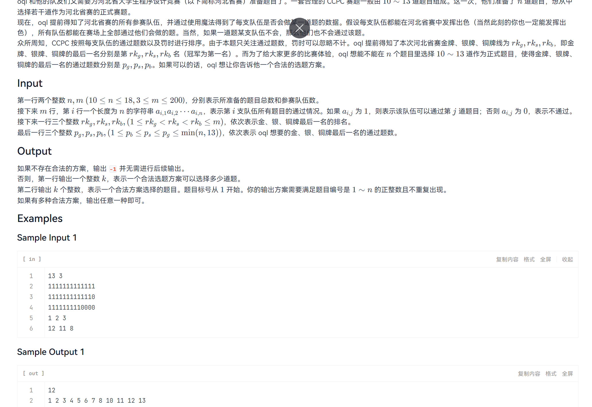

本题给定 n 道题目 和 m 支参赛队伍。 每支队伍对每一道题是否通过是已知的（0 表示未通过，1 表示通过）。
现在需要从 n 道题中选择 10 ～ 13 道 组成一场比赛的题目集合， 并要求在该选题方案下：
如果存在满足条件的选题方案，则输出题目编号；否则输出 -1。
2ⁿ 种，
当 n ≤ 13 时，最多只有 8192 种，
完全可以暴力枚举。
#include <bits/stdc++.h>
using namespace std;
int main() {
ios::sync_with_stdio(false);
cin.tie(0);
int n, m;
cin >> n >> m;
vector> a(m, vector(n)); // a[i][j] 表示第 i 支队伍是否通过第 j 题
for (int i = 0; i < m; i++) {
string s;
cin >> s;
for (int j = 0; j < n; j++) {
a[i][j] = s[j] - '0';
}
}
int rkg, rks, rkb;// 三个指定排名
cin >> rkg >> rks >> rkb;
int pg, ps, pb;// 对应排名要求的通过题数
cin >> pg >> ps >> pb;
for (int mask = 0; mask < (1 << n); mask++) {//枚举所有题目子集
int cntProblem = 0;//统计当前方案选了多少题
for (int j = 0; j < n; j++)
if (mask & (1 << j)) cntProblem++;
if (cntProblem < 10 || cntProblem > 13) continue; // 不满足题目数量要求，直接跳过
vector solved(m, 0);// 统计每支队伍的通过题数
for (int i = 0; i < m; i++)
for (int j = 0; j < n; j++)
if ((mask & (1 << j)) && a[i][j])
solved[i]++;
sort(solved.begin(), solved.end(), greater()); // 按通过题数排序（降序）
// 检查指定排名是否满足要求
if (solved[rkg - 1] == pg &&
solved[rks - 1] == ps &&
solved[rkb - 1] == pb) {
// 输出选中的题目数量
cout << cntProblem << "\n";
// 输出题目编号（注意空格控制）
bool first = true;
for (int j = 0; j < n; j++) {
if (mask & (1 << j)) {
if (!first) cout << " ";
cout << j + 1;
first = false;
}
}
return 0;
}
}
// 所有方案都不满足
cout << -1 << endl;
return 0;
}